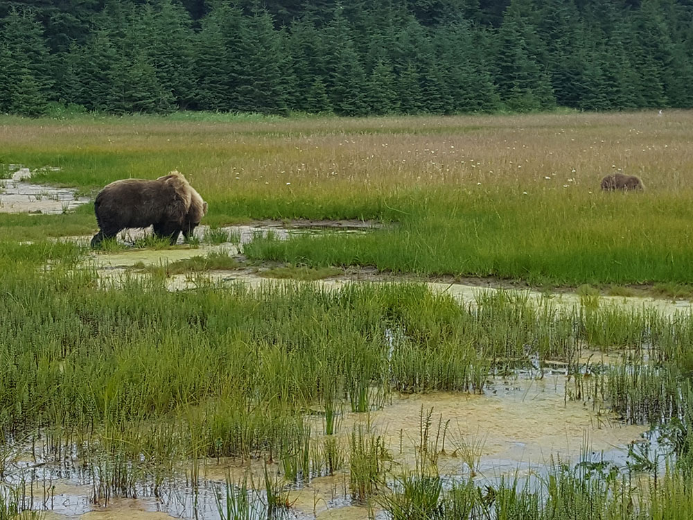
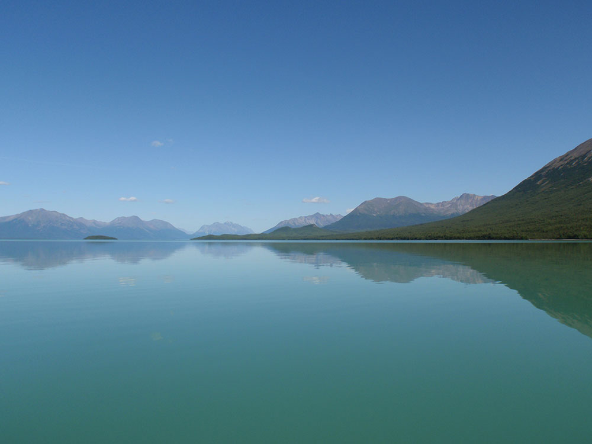
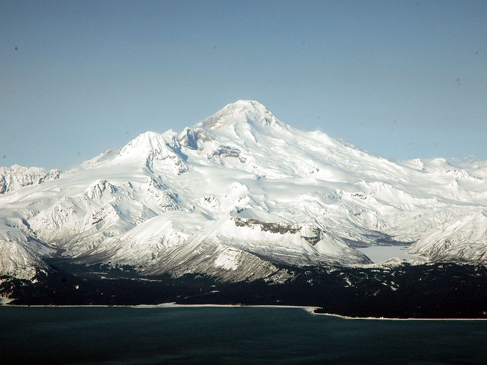

.jpg){kind=link}
Park includes many streams and lakes vital to the Bristol Bay salmon fishery, including its namesake Lake Clark, and protects rainforests along the coastline of Cook Inlet, alpine tundra, glaciers, glacial lakes, and two volcanoes
General Information
Port Alsworth Visitor Center: Summer only
Fees apply for flights, lodges, and guided trips
How to Get There
From Anchorage, AK (~100 mi): Charter a floatplane or small aircraft from Merrill Field or Lake Hood Seaplane Base in Anchorage to Port Alsworth on Lake Clark (~45 min), the park's main settled area, as no roads lead to the park.
Overview
Lake Clark National Park and Preserve protects about four million acres of southwest Alaska, roughly 100 miles southwest of Anchorage across Cook Inlet. It is where the Alaska Range and the Aleutian Range meet, creating a dramatic landscape of jagged peaks, glaciers, and two steaming active volcanoes: Mount Redoubt (10,197 feet), which last erupted in 2009, and Mount Iliamna (10,016 feet). The park stretches from the salt marshes and beaches of the Cook Inlet coast, where brown bears graze and dig for clams, to turquoise lakes, wild rivers, and tundra in the interior. Its namesake, Lake Clark, is more than 40 miles long and a key nursery for the famous Bristol Bay sockeye salmon runs.
The Lake Clark area is the homeland of the Dena'ina Athabascan people, whose historic village at Kijik is now a National Historic Landmark. Lake Clark became a national monument in 1978 and a national park and preserve in 1980, protecting the region's scenery, wildlife, and the watershed that supports the Bristol Bay salmon fishery. The park is also known for Richard "Dick" Proenneke, who built a log cabin by hand at Upper Twin Lakes in 1968 and lived there alone for about 30 years. His story, told in the film "Alone in the Wilderness," has inspired generations of visitors. Although it is close to Anchorage, Lake Clark is one of the least visited national parks. People come for coastal bear viewing, fishing, flightseeing, paddling, and backcountry adventure.
Park Sections
The park's Cook Inlet coast, with places like Chinitna Bay, Silver Salmon Creek, and Tuxedni Bay, is the most popular area for bear viewing and is visited mostly on floatplane day trips. Inland, the small community of Port Alsworth on the shore of Lake Clark is the park's hub, with the field headquarters, a visitor center, an airstrip, private lodges, and the park's few hiking trails. North of Lake Clark, Twin Lakes is home to Proenneke's cabin, and remote lakes such as Telaquana, Turquoise, and Crescent Lakes are popular for backcountry trips. The park's three Wild and Scenic Rivers, the Chilikadrotna, Mulchatna, and Tlikakila, flow through the interior and the preserve. Every part of the park is reached by small plane or boat.
Sightseeing and Exploring the Park
There are no roads in Lake Clark, so the best way to take in its scale is from the air. The flight from Anchorage to Port Alsworth through Lake Clark Pass is one of the most scenic flights in Alaska, threading between glaciers, waterfalls, and turquoise lakes. Flightseeing trips from Anchorage, Homer, Kenai, and Port Alsworth circle Redoubt and Iliamna volcanoes, which often steam from their summits. On the coast, guided bear-viewing trips land on beaches or in meadows, where visitors watch bears graze, dig for clams, and fish for salmon. In Port Alsworth, short hikes lead to views over Lake Clark and the surrounding mountains.
Hiking
Lake Clark has only a few maintained trails, all near Port Alsworth. The popular Tanalian Falls Trail (about 4.5 miles round trip) leads through forest to a waterfall on the Tanalian River, and the trail continues to Kontrashibuna Lake, a long, narrow lake surrounded by mountains. The strenuous Tanalian Mountain Trail climbs above the tree line to sweeping views of Lake Clark. Elsewhere in the park, hiking is off-trail across tundra, ridges, and river valleys, and it requires backcountry navigation and bear safety skills. The Twin Lakes area is a favorite for multi-day backpacking trips. The historic Telaquana Trail, a traditional Dena'ina route between Telaquana Lake and the Kijik area, is not maintained but can be followed by experienced hikers.
Other Activities
Bear viewing is the most popular activity. Guided day trips fly from Homer, Kenai, Soldotna, and Anchorage to the Cook Inlet coast, and several coastal lodges offer multi-day bear-viewing stays. Visitors can also fly to Twin Lakes to see Dick Proenneke's cabin, which is open to visitors in summer and often staffed by a ranger or volunteer. Lake Clark is a popular destination for fishing, with salmon, rainbow trout, Arctic char, lake trout, and grayling in its lakes and rivers. Paddlers can raft or canoe the park's Wild and Scenic Rivers or kayak on Lake Clark and Twin Lakes. Other activities include backpacking, flightseeing, wildlife photography, and hunting in the preserve.
Flora and Wildlife
Lake Clark is one of Alaska's best places to see brown bears. In early summer, they graze on sedges in coastal meadows. Later they dig for clams on the tidal flats, and in late summer and fall they fish for salmon in the streams. The park is also home to black bears, moose, caribou from the Mulchatna herd, Dall sheep, wolves, wolverines, and lynx. Along the coast, visitors may see sea otters, harbor seals, bald eagles, puffins, and even endangered Cook Inlet beluga whales. Each summer, millions of sockeye salmon swim up the Newhalen River into Lake Clark to spawn. The park's habitats range from coastal salt marsh and spruce forest to alpine tundra, and in summer the meadows are bright with wildflowers.
Access
There are no roads to Lake Clark, so all visitors arrive by small plane or boat. The most common route is a flight from Anchorage to Port Alsworth, which takes about 1 to 1.5 hours. Scheduled and charter flights are available, and air taxis also fly from Kenai, Homer, and Iliamna. Floatplanes can land on the park's many lakes, including Twin Lakes and Telaquana Lake. Coastal bear-viewing areas are usually reached on floatplane or wheeled-plane day trips from Homer, Kenai, Soldotna, or Anchorage. Weather often delays flights, especially through Lake Clark Pass, so it is wise to build extra days into any trip.
Seasons
The park is open all year, but most visitors come from June through September. Bear viewing on the coast is good throughout summer, with bears grazing on sedges in June and July and fishing for salmon from late July through September. Summer brings long days, wildflowers, and the best weather for flying, paddling, and hiking, though rain and mosquitoes are common. In late August and September, fall colors sweep across the tundra and forests, and the salmon runs peak. Winter is long, cold, and snowy. The few visitors who come fly in on ski planes and may see the northern lights.
Camping and Lodging
The National Park Service does not operate any lodges or developed campgrounds in Lake Clark, but several privately owned lodges are located in and around the park, mostly in Port Alsworth and along the coast near Silver Salmon Creek and Chinitna Bay. Many offer all-inclusive packages with flights, meals, and guided bear-viewing or fishing trips. Port Alsworth also has a small private campground. Backcountry camping is allowed throughout the park, and there is a primitive camping area with bear-resistant food boxes at Upper Twin Lake near Proenneke's cabin. Many visitors take day trips from Anchorage, Homer, or Kenai, which have a wide range of hotels and inns.
Visitor Centers
The Port Alsworth Visitor Center is the park's main visitor center, with exhibits, a film, and rangers who can provide trip-planning information, backcountry advice, and bear-resistant food containers. It is open in summer. At Twin Lakes, rangers and volunteers often staff Proenneke's cabin in summer. In Anchorage, the Alaska Public Lands Information Center downtown provides information on Lake Clark and the state's other national parks.
Things to Do
Experience One of Alaska's Most Remote National Parks
Lake Clark National Park and Preserve protects more than four million acres of mountains, glaciers, volcanoes, lakes, rivers, coastline, and wilderness in southcentral Alaska. Accessible primarily by small aircraft or boat, the park offers visitors an opportunity to experience unspoiled Alaska landscapes while enjoying world-class wildlife viewing and outdoor recreation.
View Brown Bears in Their Natural Habitat
Lake Clark is one of Alaska's premier bear-viewing destinations. Areas such as Chinitna Bay, Silver Salmon Creek, and Crescent Lake attract brown bears that feed on sedges, clams, and seasonal salmon runs. Visitors can often observe bears at surprisingly close but safe distances through guided excursions and designated viewing areas.
See Active Volcanoes
The park contains two active volcanoes, Mount Redoubt and Mount Iliamna, which dominate the western skyline. Flightseeing tours provide spectacular views of volcanic peaks, glaciers, alpine valleys, and the rugged wilderness that makes Lake Clark one of the state's most geologically diverse national parks.
Explore Turquoise Lakes and Wild Rivers
Lake Clark itself stretches more than 40 miles through the heart of the park and offers breathtaking scenery. Visitors can enjoy boating, kayaking, rafting, canoeing, and fishing while exploring crystal-clear waters surrounded by mountains and forests.
Visit Dick Proenneke's Historic Cabin
One of the park's most famous attractions is the hand-built log cabin of Dick Proenneke at Twin Lakes. His writings and films documenting a life of wilderness solitude inspired generations of outdoor enthusiasts. Visitors arriving by floatplane can view the preserved cabin and surrounding landscape.
Hike Through Diverse Wilderness Landscapes
Although there are few developed trails, visitors can explore tundra ridges, alpine valleys, lake shores, and river corridors. Backcountry hiking is a popular activity and allows adventurers to experience the park's vast wilderness and spectacular scenery.
Observe Wildlife Beyond Bears
Lake Clark supports a rich diversity of wildlife including moose, caribou, wolves, Dall sheep, bald eagles, sea otters, harbor seals, and numerous bird species. Wildlife viewing opportunities exist throughout the park's coastal, forest, and alpine environments.
Take a Flightseeing Adventure
Because of the park's size and limited road access, flightseeing tours are among the best ways to appreciate its scale and beauty. Visitors can view glaciers, volcanoes, remote lakes, braided rivers, and wildlife habitats while traveling over some of Alaska's most spectacular terrain.
Top Trails
Tanalian Falls Trail
Length: Approximately 4.5 miles round trip
Elevation Gain: Approximately 600 feet
Difficulty: Moderate
Beginning near the community of Port Alsworth, this popular trail leads through forested terrain to a scenic waterfall. The route offers beautiful views of Lake Clark and surrounding mountains while providing one of the park's most accessible hiking experiences.
Kontrashibuna Lake Trail
Length: Approximately 3 miles one way
Elevation Gain: Minimal
Difficulty: Easy to Moderate
This scenic route travels through forests and open terrain to Kontrashibuna Lake, offering excellent opportunities for wildlife viewing, photography, and peaceful exploration away from developed areas.
Twin Lakes Backcountry Routes
Length: Variable depending on route
Elevation Gain: Varies
Difficulty: Moderate to Strenuous
The Twin Lakes area provides opportunities for experienced hikers to explore the wilderness that inspired Dick Proenneke. Routes traverse lakeshores, tundra slopes, and alpine terrain while offering solitude and exceptional scenery.
This article uses material from the Wikipedia article "Lake Clark National Park and Preserve", which is released under the Creative Commons Attribution-Share-Alike License 3.0
This article uses material from nps.gov "Lake Clark National Park and Preserve" and from Travel Alaska "Where to Stay in Alaska's National Parks"




